S04#
Avtor: Laura Hudobivnik
Datum izdelave: 2024-05-10
Koda seminarja: S04
Vhodni podatek#
Povezava do datoteke z vhodnim podatkom: S04
Rezultati analiz#
Osnovni podatki#
Ime proteina#
Thimet oligopeptidase
Thimet oligopeptidases (EC 3.4.24.15), okrajšano kot TOPs, so vrsta M3 metalopeptidaz (Wikipedia)
Postopek je vseboval 2 dela:
določitev inserta in
identifikacijo proteina.
DOLOČITEV INSERTA
Za določitev inserta smo najprej pridobili zaporedje plazmidnega vektorja pUC57, v katerega je bil protein/del proteina vstavljen. Osnovne podatke o vektorju pUC57 in njegovo zaporedje smo pridobili s spletne strani enega izmed ponudnikov: GenScript
z orodjem EMBOSS Needle smo naredili (globalno) poravnavo zaporedja vektorja pUC57 in naših izhodnih podatkov (vektor pUC57 + insert). Rezultat je prikazan na naslednji sliki:
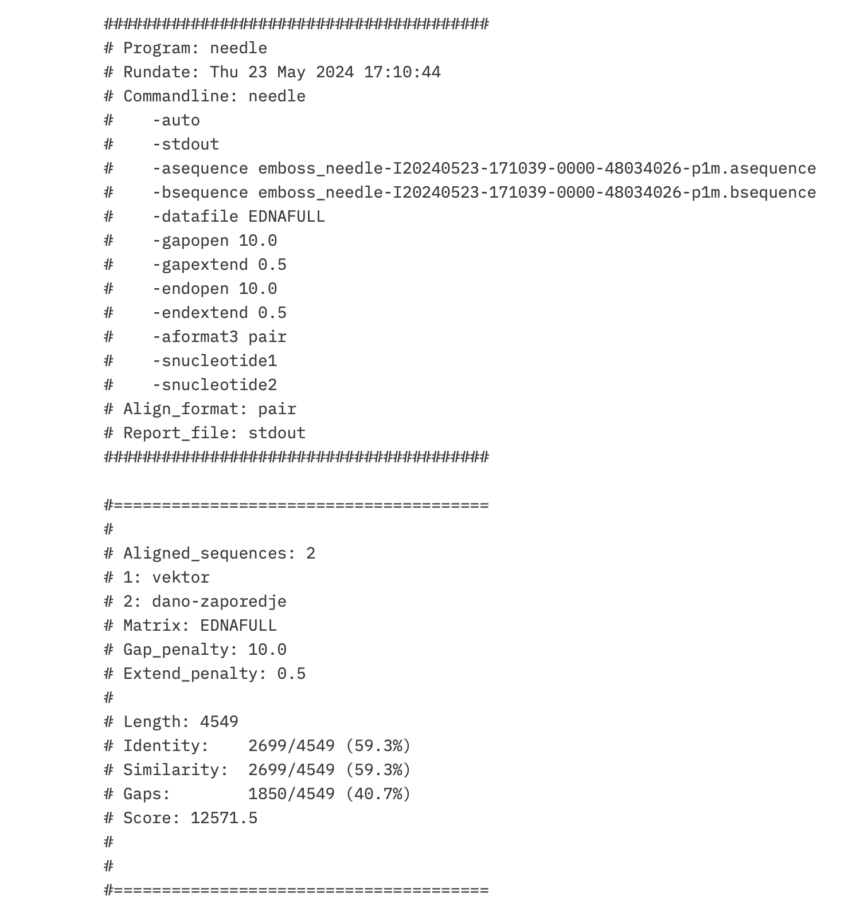
Obširnejša sklenjena vrzel, ki jo obdajata dva popolnoma poravnana območja kaže, da gre tam za področje inserta. Plazmid je krožna DNA, zato pride do krajšega zaporedja na začetku in koncu, ki nista poravnana, ampak sta popolnoma identična, zatorej ne gre za še eno vrzel. Začetek in konec inserta je prikazan na naslednjih dveh slikah:
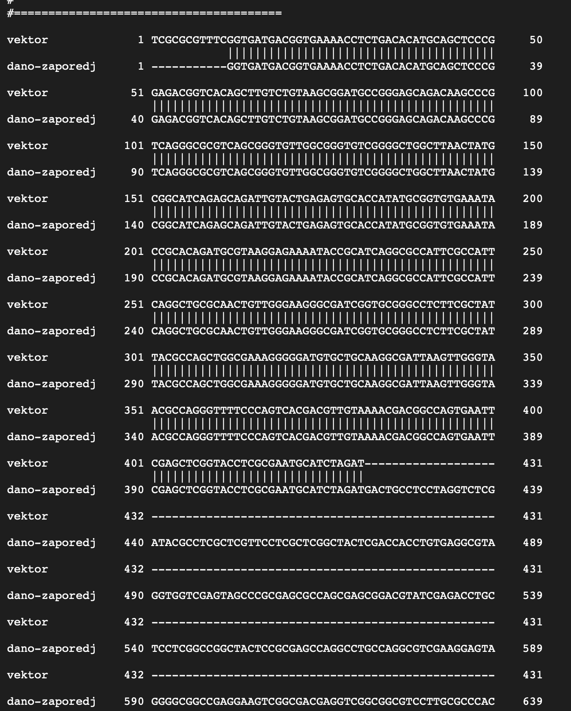
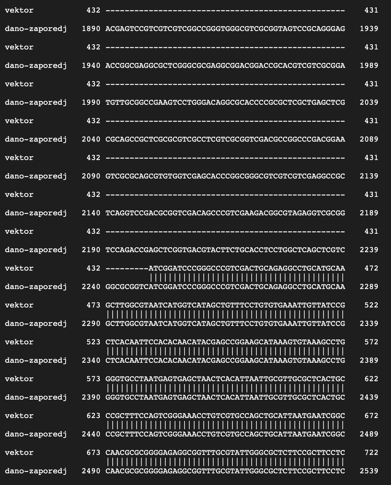
IDENTIFIKACIJA PROTEINA
V naslednjem koraku smo z orodjem BLASTx z insertom v obliki FASTA formata poiskali čimbolj podobne proteine, v želji, da najdemo tega, kjer je 100 % identičnost, saj bi tako lahko določili iskani protein. Iskanje smo začeli z non-redundant protein sequences (nr), ampak nismo našli nobenih 100 % identičnih proteinov, kar demonstrira spodnja slika z vrednostmi pod “per. ident”.
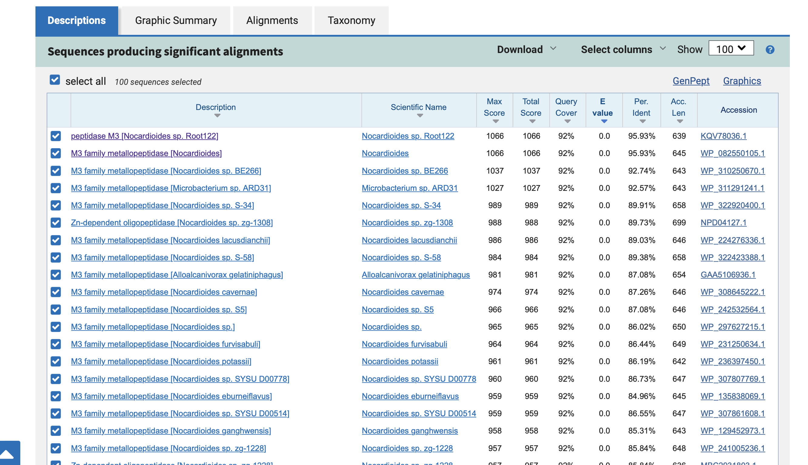
Iskanje smo zato ponovili z bazo metagenomic proteins (env_nr) in našli eno 100 % ujemanje pod prvim zadetkom, kar je vidno na spodnjih dveh slikah. Prva kaže na 100 % per.ident, druga pa poravnavo.
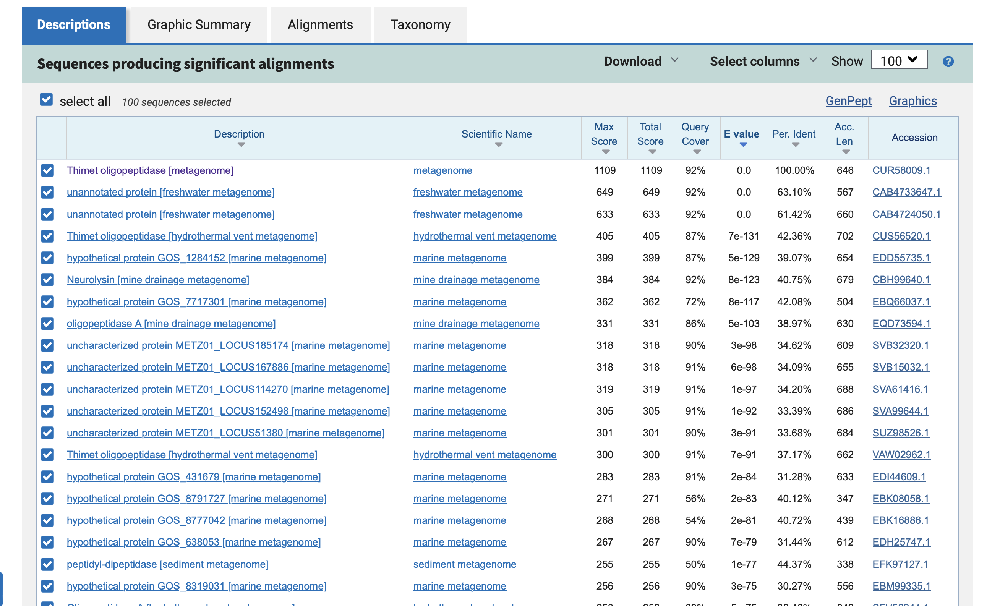
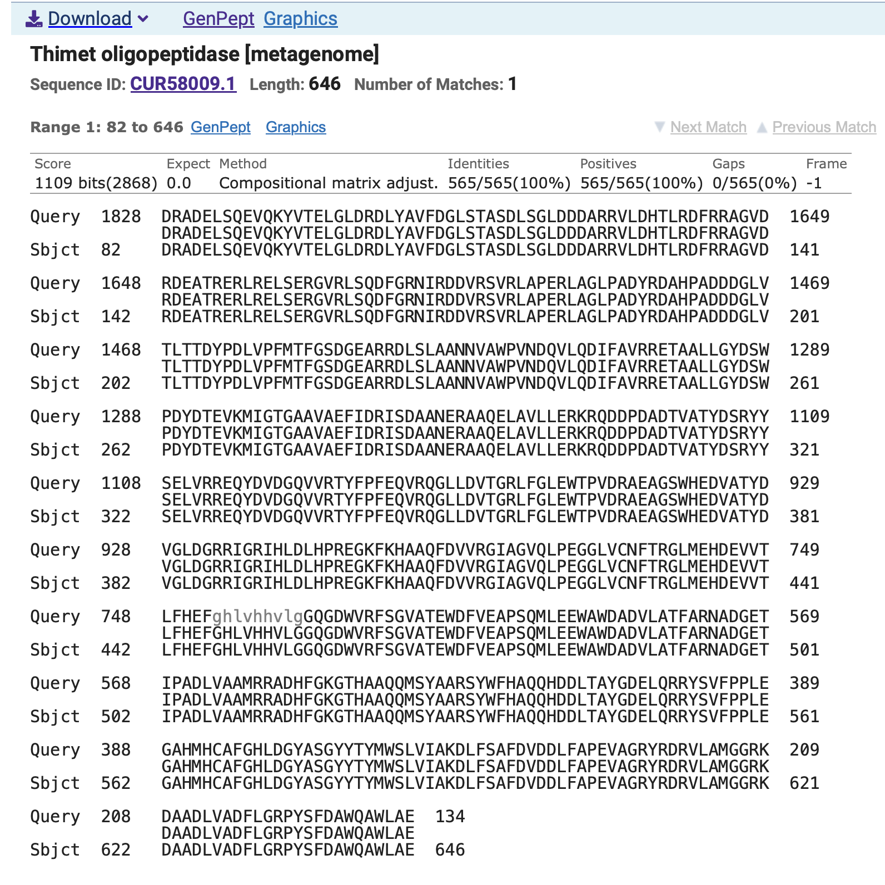
Kot kaže, je bil v insertu vstavljen celoten zapis za protein, kar z enako dolžino protein, demonstrirajo podatki z GenBank. Na vrhu v isti liniji kot “LOCUS” je zapis “646 aa”, kar pomeni dolžino 646 aminokislinskih ostankov. Ta dolžina je enaka kot na zgornji fotografiji pod “Length”.
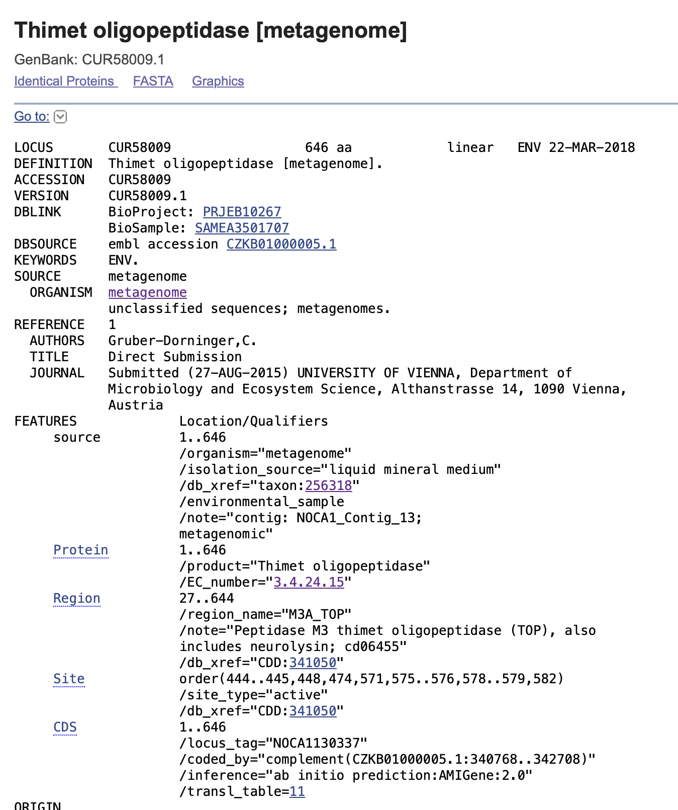
izvorni organizem proteina#
Nocardioides cavernae
Aminokislinsko zaporedje našega proteina temelji na metagenomski bazi podatkov. Najbolj jasno to lahko vidimo na GenBank, kjer je navedeno, da je organizem “metagenom”, vir izolacije pa “liquid mineral medium”. (glej zgornjo sliko - tretja in četrta vrstica pod “source”).
Metagenom si lahko podrobneje ogledamo, kot je izpisan na sledeči sliki ampak iz njega nismo mogli razbrati izvornega organizma.
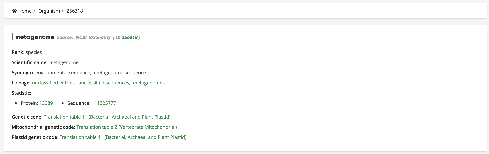
Za dodatne informacije, smo se obrnili na podobne proteine - tiste, ki niso bili 100 % identični, najdene z BLASTx v bazi non-redundant protein sequences (nr).
Prva dva zadetka sta imela vse pomembnejše parametre enake, predvsem pa je bil delež identičnosti pri obeh 95,93 %
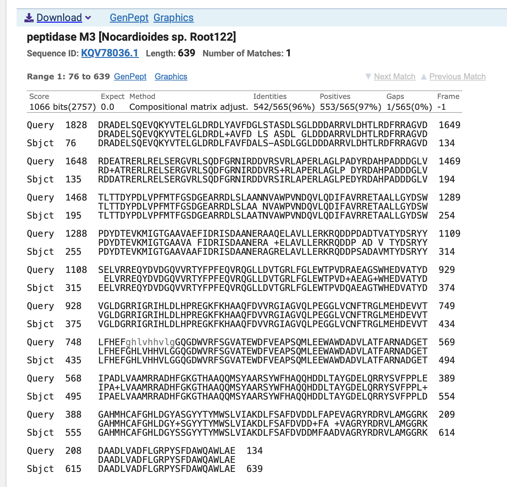
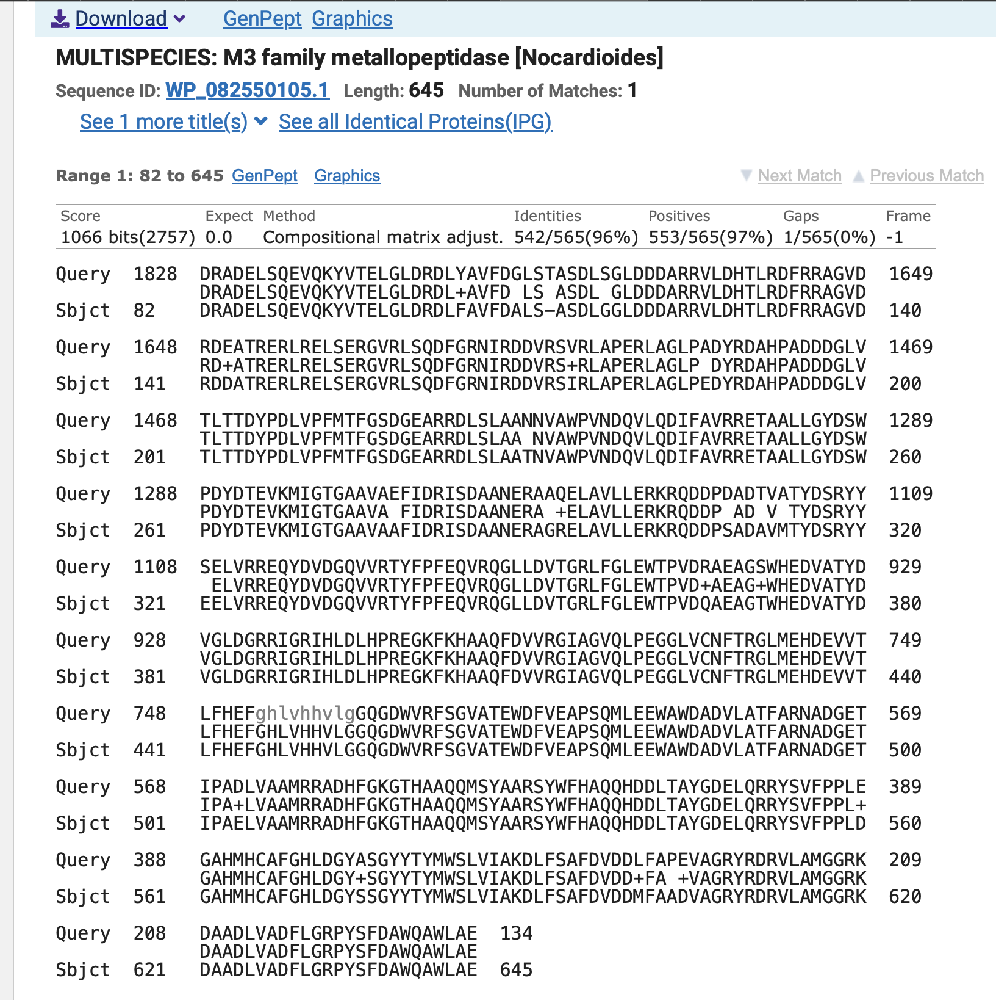
To sta bila spodaj navedena:
peptidase M3 [Nocardioides sp. Root122]
M3 family metallopeptidase [Nocardioides]
Po prvem sodeč naj bi po vsej verjetnosti bil izvorni organizem proteina bakterija Nocardioides sp. Root122. Za drug zadetek, če odpremo rubriko “alignments” opazimo, da ima M3 family metallopeptidase [Nocardioides] še eno poimenovanje: Zn-dependent oligopeptidase [Nocardioides cavernae]. Po izbiri najdbe identičnih proteinov znotraj GenBank, dobimo izpis spodnje tabele:
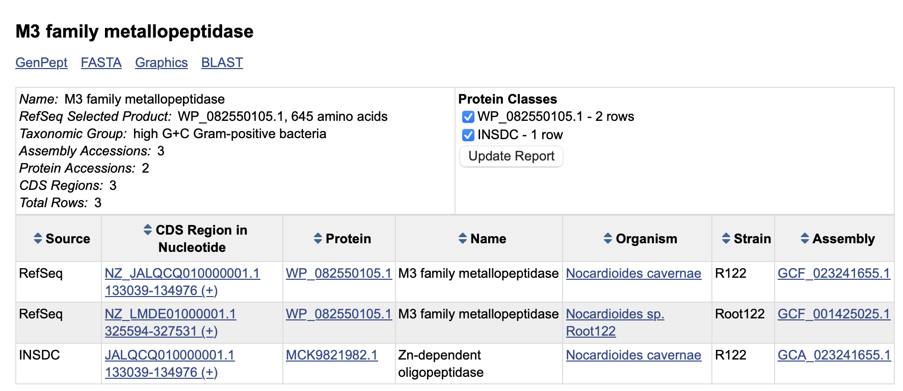
Kot kaže, gre za popolnoma identične proteine le z nekoliko drugačnimi oznakami in skoraj identičnimi organizmi. Ob pogledu na taksonomijo vsakega naletimo na to, da je Nocardioides sp. Root122 neklasificiran, zatorej smo se za odgovor glede izvornega organizma odločili za drugi zadetek.
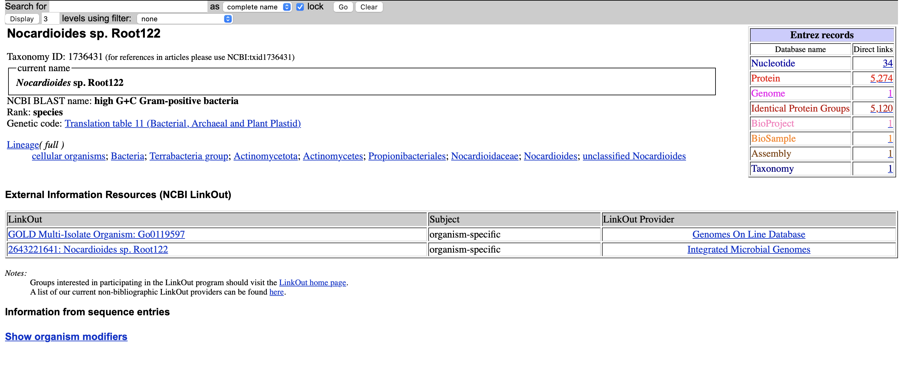
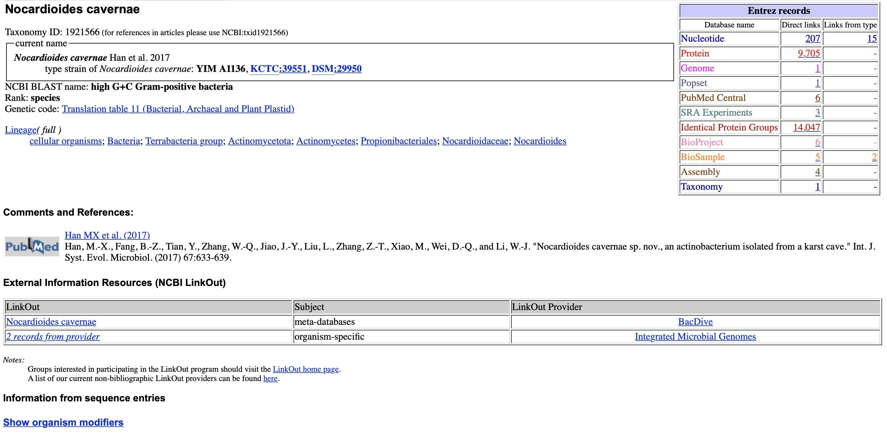
Pod “Lineage” vidimo celotno klasifikacijo za oba organizma. Pri Nocardioides sp. Root122 se konča z “unclassified Nocardioides”
Nocardioides cavernae je morfološko bacil, glede na sestavo celične membrane in stene Gram-pozitivna bakterija, glede tolerantnosti na kisik pa aerobna bakterija. (Wikipedija)
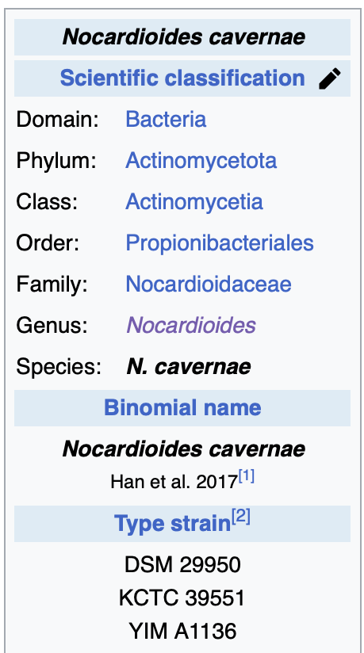
Lokalizacija in topologija (če je membranski)#
Citoplazma
Podatka o lokaciji proteina na Uniprotu nismo našli, saj se protein nahaja v izrazito specifičnem organizmu.
Glede na to, da je izvorni organizem bakterija, so mogoče lokacije citoplazma, periplazma, membrana ali extracelularni prostor (izločanje s sekrecijo).
Na Uniprotu so tudi za ostale bakterije večinoma odsotni podatki, zato smo se obrnili na različna orodja, ki glede na aminokislinsko zaporedje (in signalne sekvence) predvidevajo lokalizacijo.
WoLFPSORT kot največjo verjetnost mesta nahajanja prevideva citoplazmo. Omenjeno orodje ne ponuja izbire bakterij, ampak le živali, rastline in glive.
V prvi vrstici zgornje slike so z naraščajočim številom posameznih lokacij povezane večje verjetnosti nahajanja. za citosol/citoplazmo ta znaša 8.5, kar je največ izmed vseh navedenih možnosti.
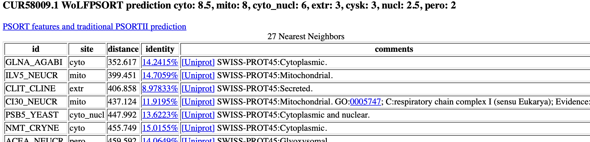
Zato smo za dodatno verifikacijo uporabili še SignalP. Ta ponuja izbiro bakterijo, tudi specifično Gram pozitivnih, kar je predvideni izvorni organizem.
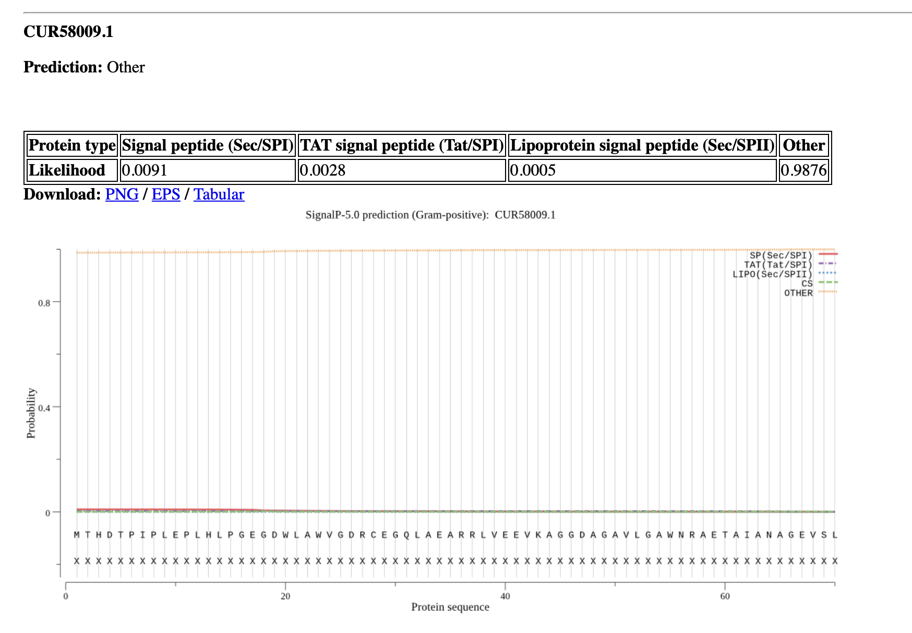
Spodnja slika povzema rezultate: zelo majhna je verjetnost, da gre za sekretoren ali membranski protein (Signal peptide (Sec/SPI), TAT signal peptide (Tat/SPI), Lipoprotein signal peptide ,(Sec/SPII)). Po principu izključevanja sklepamo, da je edina preostala možna lokacija (pod “other”) verjetno citoplazma.
Velikost proteina#
646 aminokislinskih ostankov (razloženo že zgoraj), oz 71 060 Daltonov, kar je približno 71 kDa
Podatek o dolžini aminokislinskega zaporedja (velikosti proteina) je bil pridobljen z GenBank, pretvorbo v enoto Daltonov pa smo izvedli na podlagi predpostavke, da je molekulska masa ene aminokisline 110 Da.
Dolžina aminokislinskega zaporedja je navedena v isti liniji kot “LOCUS” v obliki “646 aa”.
Domenska zgradba#
peptidaza M3A/M3B s katalitični domeno in potencialni signalni peptid na N-koncu
Na Uniprotu je za protein na voljo razdelek “family & domains”, kjer je od 218 do 642 aminokislinskega ostanka označena peptidaza M3A/M3B katalitična domena (Peptidase M3A/M3B catalytic).
To demonstrira spodnja slika:
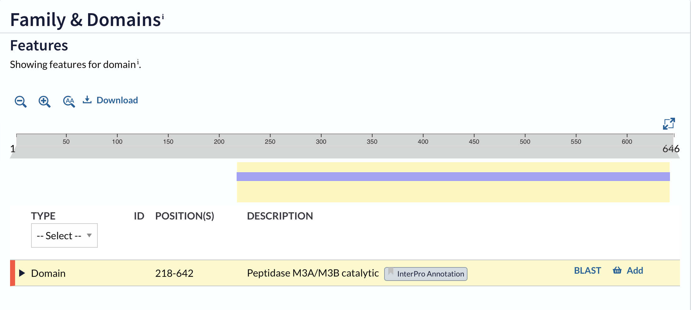
Za podrobnejše določitev (predvidevanje) domen smo uporabili InterPro, kamor smo vnesli aminokislinsko zaporedje (GenBank) proteina. Rezultate povzemata spodnji dve sliki.
(Predvidene) domene, ki jih najdemo v bazi Interpro so:
Neurolyisin/Thimet oligopeptidase, N-terminal
Metallopeptidase, catalytic domain superfamily
Neurolysin/Thimet oligopeptidase, domain 2
Peptidase M3A/M3B s predelom katalitične domene
kot jih prepoznamo v …
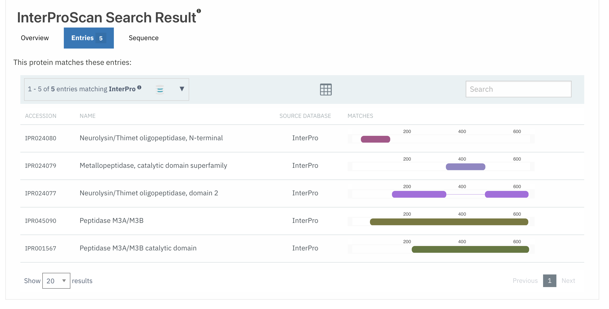
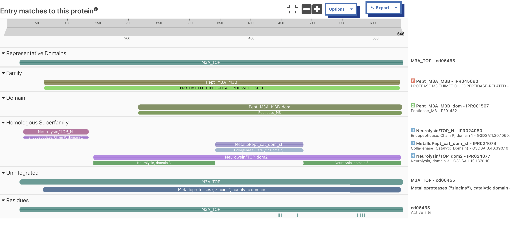
Zadnja domena (Peptidase M3A/M3B s predelom katalitične domene) je enaka, kot jo podaja Uniprot, pokriva tudi enako področje. Vse ostale spadajo pod homologno superdružino - evolucijsko te domene izhajajo iz skupnega prednika. Pokrivajo pretežno predel pred (v obeh orodjih potrjeno) peptidaza M3A/M3B katalitično domeno.
Alternativno razlago, kaj predstavlja področje na N-koncu ponuja proučevanje drugega zadetka homolognih proteinov našemu pod alternativnim imenom “Zn-dependent oligopeptidase” (obrazloženo že zgoraj). V večih bakterijah se poleg peptidaza M3A/M3B katalitične domene nahaja še signalna sekvenca.
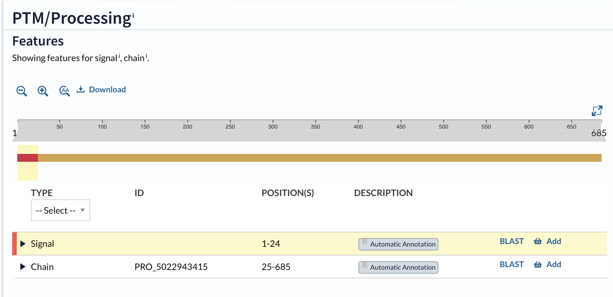
Post-translacijske modifikacije (PTM)#
Podatka o potencialnih post-translacijskih modifikacijah proteina na Uniprotu nismo našli, saj se protein nahaja v izrazito specifičnem organizmu.
Proučevanje podobnih proteinov v bakterijah kaže na raznolikost rezultatov. Ker torej spet ne moremo z gotovostjo trditi do kakšnih modifikacij prihaja, če sploh, smo se obrnili na orodja za predvidevanje.
Orodje ScanProsite ne napoveduje nobenih modifikacij, le identificira aktivno mesto na aminokislinskem ostanku 445 in vezavno mesto za Zn.
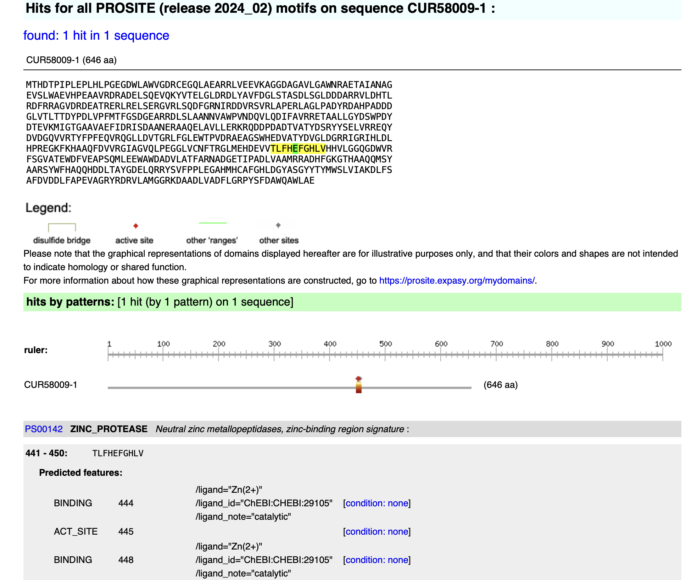
V nadaljevanju smo si za dodatnov verifikacijo z orodjem MusiteDeep ogledali, kaj so predvidevane PTM. Score smo ponastavili na min. 0.6, kar sega v zgornji del območja srednje gotovosti. Na štirih serinih predvideva srednjo gotovo napoved fosforilacije.
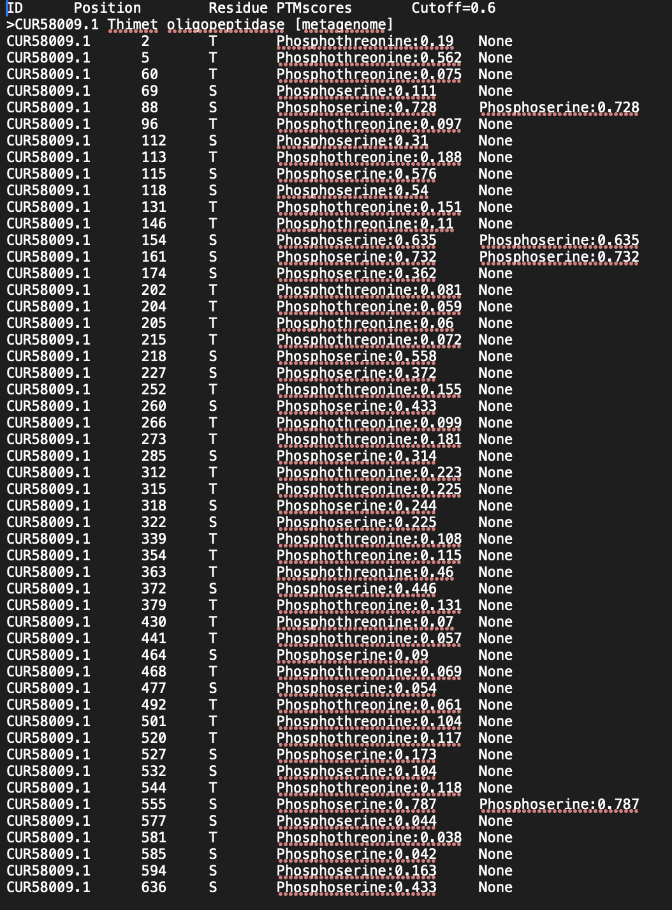
(predvidene PTM ob ponastavljenih parametrih za dovolj stroge pogoje navedene v najbolj desnem stolpcu)
Funkcija#
Funkcija proteina#
Molekulska funkcija: vezava kovinskega iona in metaloendopeptidazna aktivnost
Metalloendopeptidazna aktivnost pomeni cepitev peptidov srednjih dolžin s pomočjo kovinskega iona.
(Protein namreč spada pod Thimet oligopeptidase family, veliko družino sesalskih in bakterijskih oligopeptidaz, ki cepijo peptide srednjih dolžin).
Informacijo smo pridobili z Interpro glede na osnovno domeno: peptidaza M3A/M3B s katalitično funkcijo (in tako tudi funkcijsko pomembnostjo). Omenjena domena spada pod peptidaze družine M3.
opomba: vse, kar je o funkciji zapisano v zgornjih odstavkih izhaja iz besedila naslednjih treh slik:
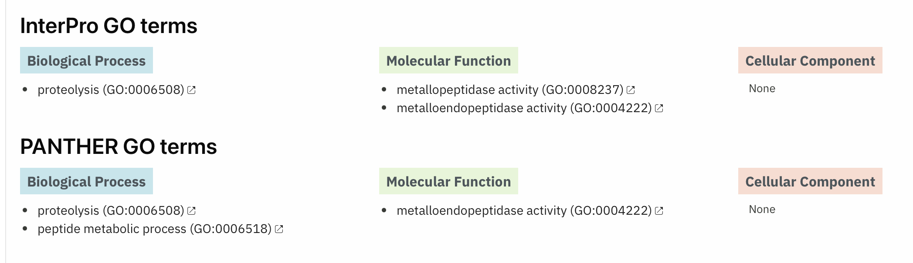
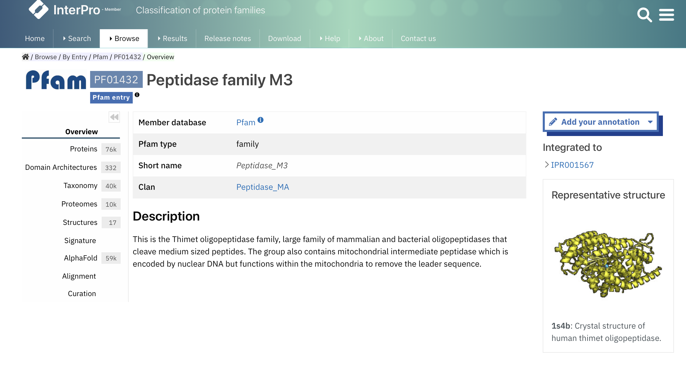

Del katerega biološkega procesa: proteolize
Podatke v odebeljenem zapisu smo pridobili z Uniprota pod razdelkom “Function”
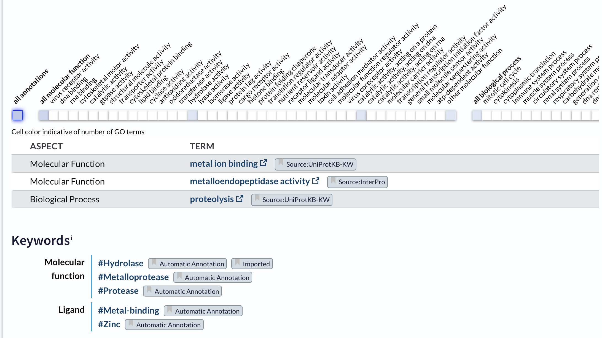
Substrat#
oligopeptidaze
(vir že pod točko “Funkcija proteina”, kjer so obrazložene peptidaze M3)
cink kot ligand za katalizo
(vir je v okviru podatkov o funkciji z UniProt pod “Keywords/Ligand” na zgornji sliki)
Najbolj in najmanj ohranjene regije#
V luči funkcije proteina
Poravnavo večih zaporedij proteinov podobnih glede na aminokislinsko zaporedje smo izvedli s Clustal Omega, grafično predstavo pa z WebLogo3 po pretvorbi poravnave v FASTA format.
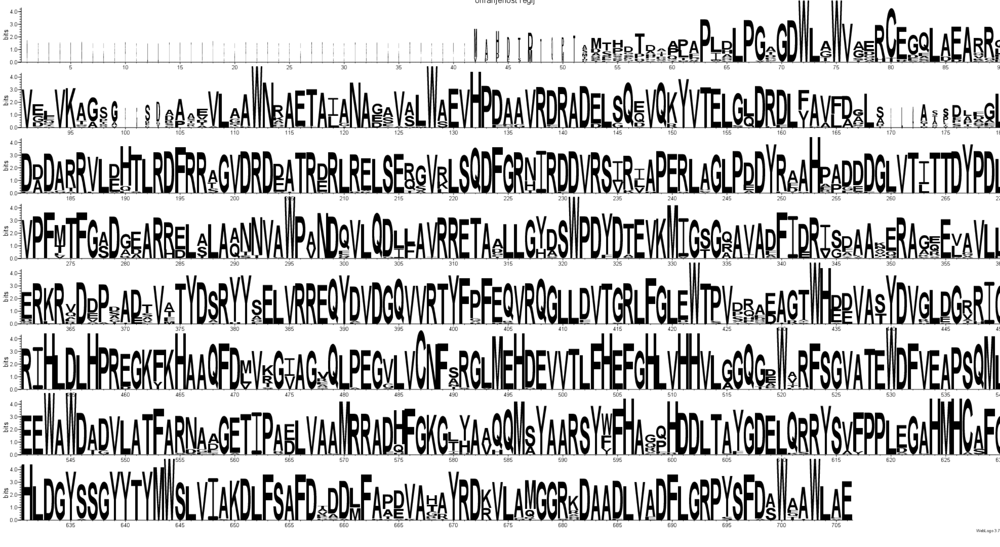
Za funkcijo proteina je najpomembnejša domena peptidaza M3A/M3B s katalitičnim delom, zato ni presenetljivo, da je del ki ga pokriva (večina zaporedja le brez krajšega zaetnega dela), večinoma dobro ohranjen.
Slabša ohranjenost je le na začetku (manjša velikost črk)
opomba: odločili smo se za monokromatsko barvno skalo, ker je bila kljub pričakovanemu glede na ostale možnosti barvne možnosti najprimernejša za olajšano prepoznavanje velikosti črk
Sorodni proteini#
Sorodni proteini#
Sorodne proteine smo določali na podlagi treh kriterijev
glede na podobnost aminokislinskega zaporedja
glede na ključne motive/domene
glede na 3D strukturo
GLEDE NA AMINOKISLINSKO ZAPOREDJE
M3 family metallopeptidase (ali z drugim imenom: Zn-dependent oligopeptidase) v pretežno v različnih vrstah Nocardioides.
Z iskanje po nr bazi BLASTp z zaporedjem našega protein, smo pridobili naslednje zadetke:
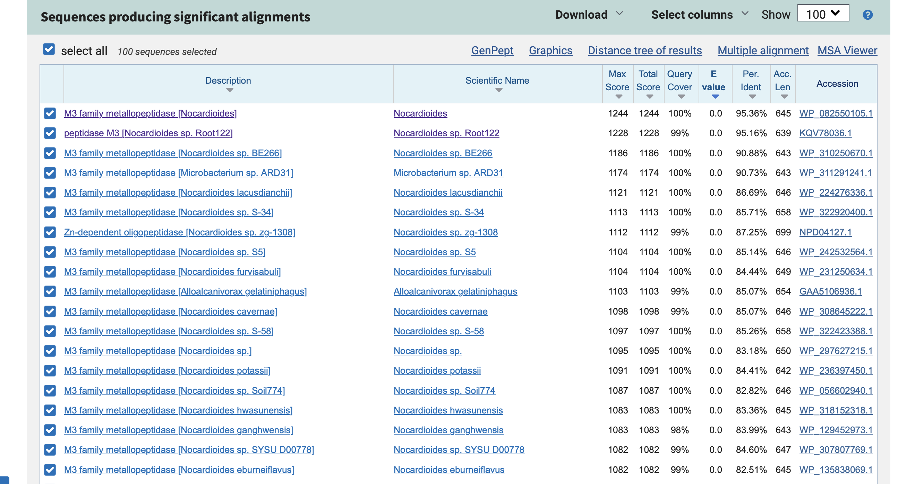
GLEDE NA OHRANJENE KLJUČNE MOTIVE/DOMENE:
Thimet oligopeptidaze za organizme: Mus Musculus (hišna miš), Ratts norvegicus (podgana), Bos taurus (govedo), Sus scrofa (prašič), homo sapiens (človek) in nekoliko manj soroden (mitohodrijski) nevrolizin v različnih organizmih. Delež identičnosti se je pri najbližjih zadetkih gibal okrog 30 %, kar je malo.
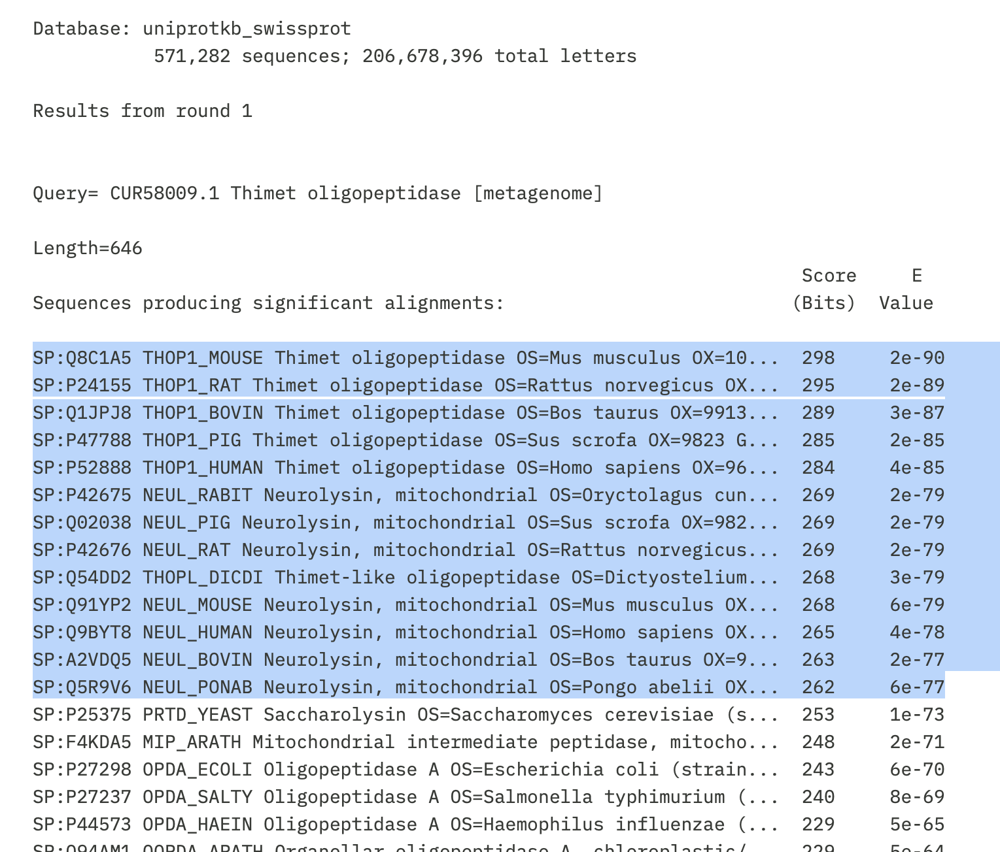
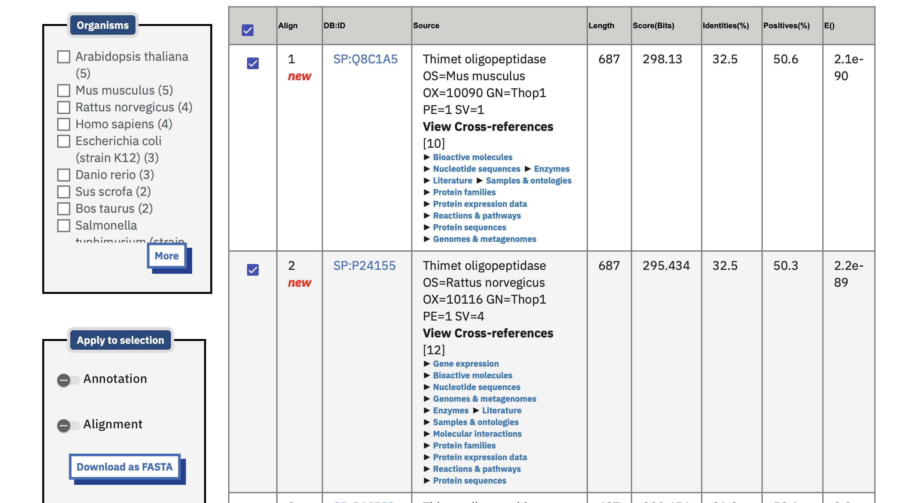
V tem primeru, smo iskanje izvedli z PSI-BLAST (Sequence Similarity Search (SSS)) s čimer dobimo manjšo podobnost sekvence, ampak bolj konzervativne domene (pri nas je ta ena). S tem dobimo zadetke, evolucijsko bolj oddaljenih vrst, ki so funkcijsko (bolj) relevantne.
GLEDE NA 3D STRUKTURO
Še boljši odgovor na to, kaj so funkcijsko primerljivi proteini, lahko dobimo z iskanjem proteinom s podobno 3D strukturo. To smo izvedli z orodjem DALI.
Namesto “Heuretic”, smo uporabili “Extensive search” za povečano bazo iskanje, s katero bi lažje preprečili lažne visoke vrednosti Z.
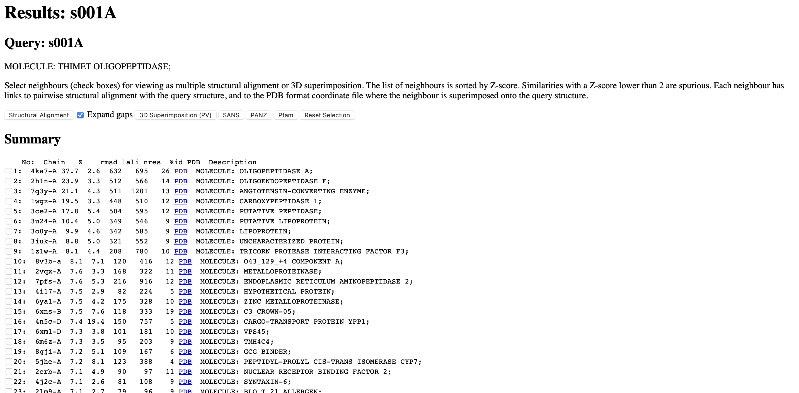
Prva dva zadetka: 4ka7-A, OLIGOPEPTIDASE A in 2h1n-A OLIGOENDOPEPTIDASE F sta glede na primerljivo dolžino aminokislinskega zaporedja in dovolj visoko vrednost Z (> 2.0) strukturno dokaj primerljiva. Res pa je, da smo iskali le po PDB bazi, ki je srednje velika, in izključuje številne (npr. le predvidene) strukture.
Podobni evkariontski proteini#
Uporabili smo celotno zaporedje za naš protein v orodju BLASTp z dodatnim kriterijem organizma: Eukaryota (taxid:2759) kot bazo podatkov pa: non-redundant protein sequences (nr)
Edini z E-vrednostjo O in največjo identičnostjo (48,58 %), ki je vseeno prenizka, da bi ta protein lahko z gotovostjo označili kot podobnega je bil hipotetični protein Q3G72_001378 [Acer saccharum]. Zanesljivih podatkov o njegovi funkciji ni bilo moč pridobiti.
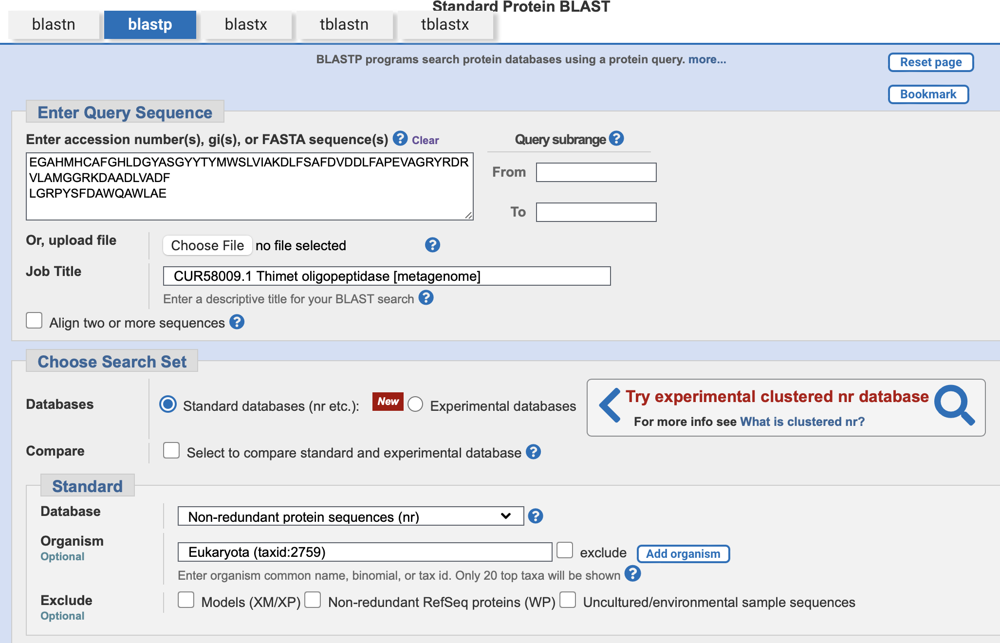 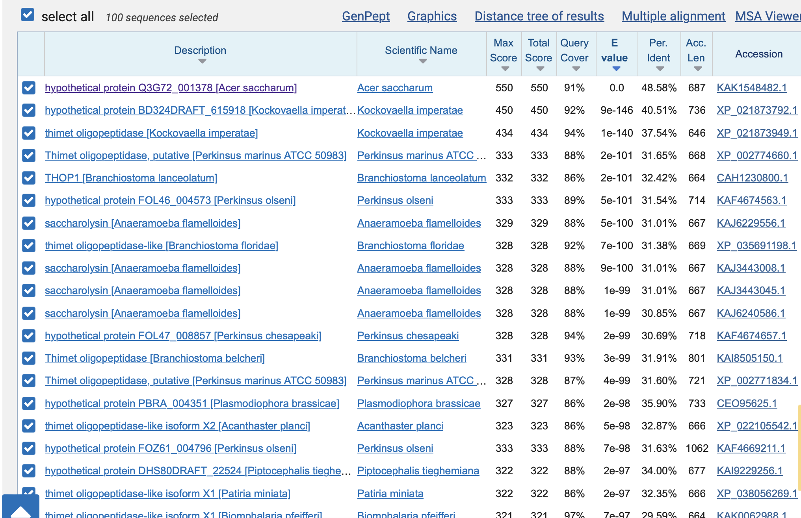
Iskanje smo ponovili še z najbolj podobnim proteinom našemu (95,93 % identičnost) peptidase M3, ki v nasprotju z našim pripada speicifičnemu organizmu: [Nocardioides sp. Root122]. Dobili smo enake rezultate.
Funkcijska povezanost z drugimi proteini#
S pomočjo orodja STRING, smo našli 6 funkcijskih partnerjev. Kot organizem smo ponastavili: Nocardioides sp. Root122, ker je imel glede na ponujene možnosti največji delež ujemanja (gre za prvi zadetek, ki smo ga dobili tudi z BLASTx pri določanju izvornega organizma)
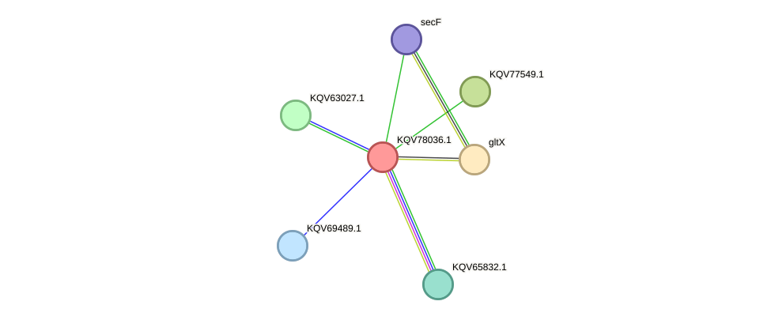
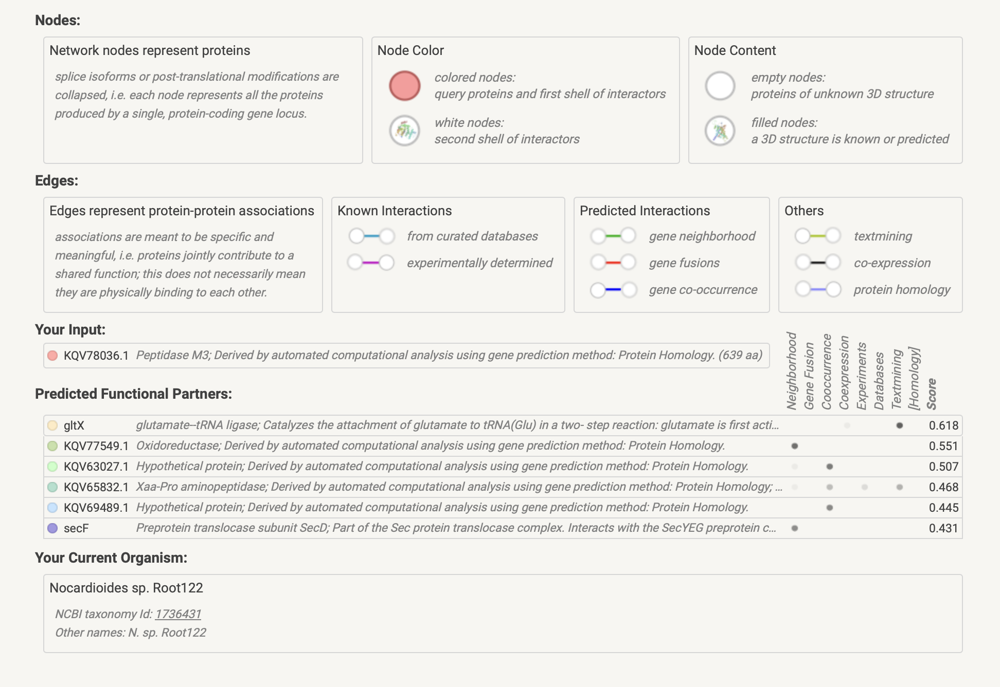
Opomba: vsi proteini, ki se začnejo s KQV, so bili pridobljeni s pomočjo predvidevanja glede na proteinske homologe (automated computational analysis using gene prediction method)
Upoštevali smo le proteine, kjer je score segal v mejo vsaj srednje vrednosti zanesljivosti (0.400 - 0.700), kar so že bolj zanesljivi rezultati, vseeno pa bi za potrditev potrebovali eksperimentalne podatke.
Blizu drug drugega v genskem zapisu (gene neighbour) naj bi bila 2 - oksidoreduktaza pod oznako KQV77549.1 in preprotein translokazna podenota SecD z imenom SecF. Geni, ki so lokacijsko blizu, še posebej pa v prokariontih, so pogosto funkcijsko povezani in regulirani ali pa deli istega operona.
KQV63027.1 (hipotetični protein), KQV65832.1 (Xaa-Pro aminopeptidaza) in KQV69489.1 (še en hipotetični protein) so glede na filogenetsko določitev (concurrence or phylogenetic profiling) potencialno funkcijsko povezani z našim. Ta način funkcijske analize pregleda, ali se gena za izbrana dva proteina (ali proteina sama) konsistentno pojavljata skupaj preko različnih vrst. To namreč nakazuje, da sta morda funkcijsko povezani, vključena v iste biološke procese.
Glede na že obstoječo znanstveno literaturo (text mining) sta funkcijsko z našim proteinom potencialno povezana gltX (glutamat-tRNA ligaza) in KQV65832.1 (hipotetični protein).
Celokupno se največ interakcij predvideva z KQV65832.1
Morebitne medproteinske interakcije#
O našem proteinu nismo našli podatkov. Sorodni proteini v evkariontskih organizmih so obsegali le en hipotetičen protein (glej razdelek “Sorodni evkariontski proteini”), zatorej tudi tega nismo mogli uporabiti za napoved medproteinsih interakcij.
Struktura#
eksperimentalno določena struktura#
Podatka za strukturo thimet oligopeptidase v PDB za naš izhodnji organizem ni. V bazi je le struktura za človeka (PDB ID: 1S4B), zato smo lahko v Chimeri vizualizirali slednjo. Zaradi katalitične pomembnosti smo posebej označili cinkov ion.
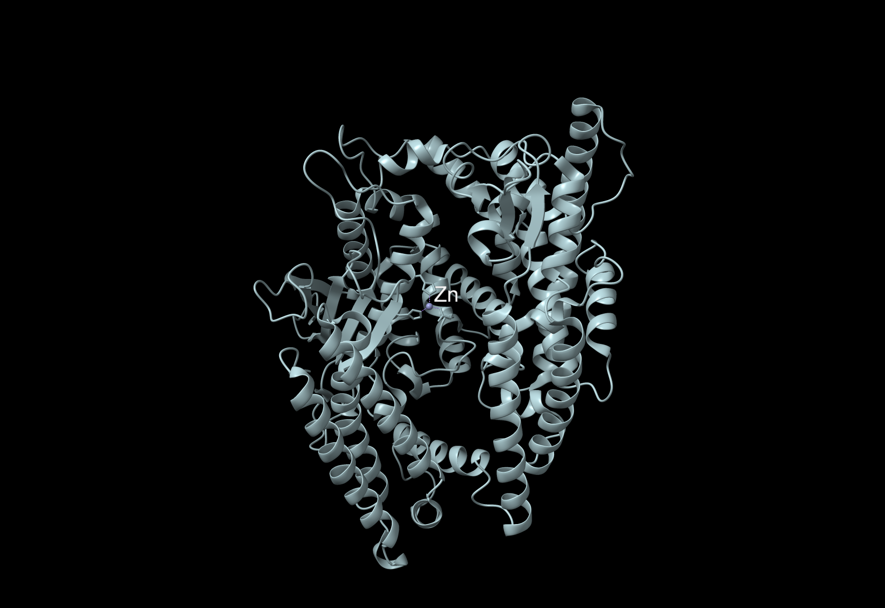
Model#
Model proteina je bil oblikovan s pomočjo zaporedja iz GenBank v Alphafold 2 (Google Colab)
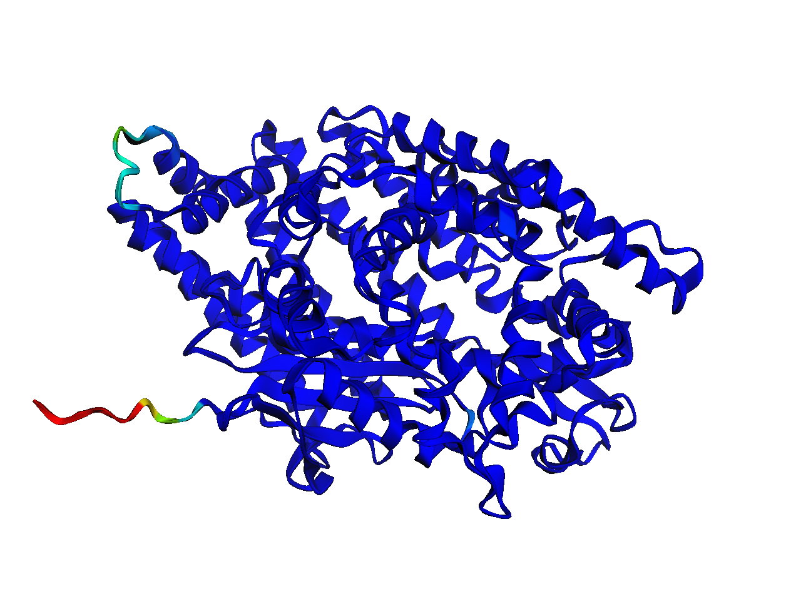
Pretežno je zanesljivost strukture proteina zelo visoka (> 90 %). Nekoliko manjšo zanesljivost najdemo na manjšem odseku tekom strukture (svetlo modro obarvano, > 80 %). Izraziteje manj zanesljivo regijo prepoznamo le v N-terminalnem delu (padec vse do < 50%)
Superpozicija pro- in evakriontskih variant#
V SWISS-PROT smo oblikali model našega proteina glede na aminokislinsko zaporedje. Dobili smo 2 modela, ki ju prikazuje slednja slika:
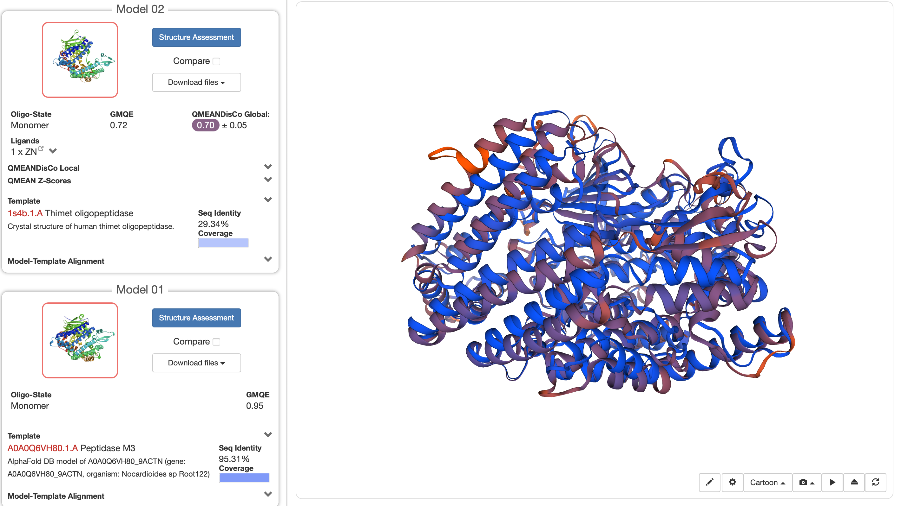
Za superpozicijo smo uporabili program Chimera X, kjer smo v isti seji izvedli poravnavo (MatchMaker) našega proteina (SWISS_PROT) in najbolj podobnega evkariontskega proteina glede na 3D strukturo (PDB: 4KA7, OLIGOPEPTIDASE A. Omenjen in določen je bil pri iskanju podobnih proteinov glede na 3D strukturo z DALI).
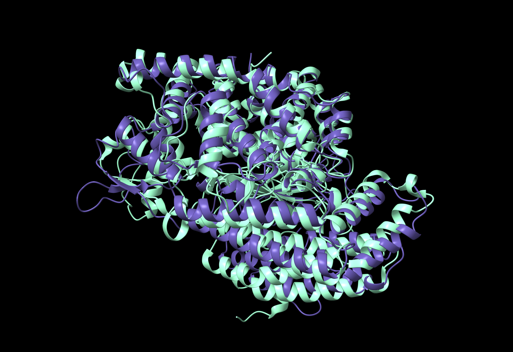
opomba: vijolično je obarvan naš protein (thimet oligopeptidase), turkizno pa oligopeptidase A pod PDB ID: 4KA7